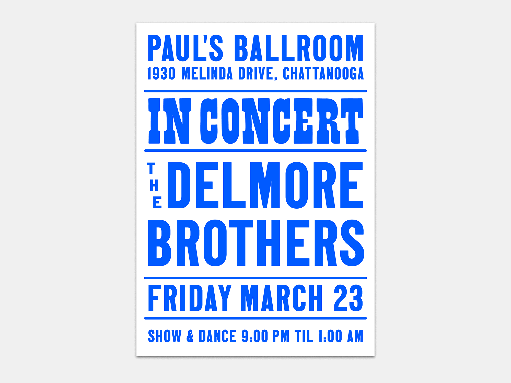

Eric Markus is a graphic designer with five years of experience in fast-paced, deadline-driven environments and a demonstrated history of exceptional craftsmanship and productivity. You can find his resume
here
and examples of his work below.
Jewish Museum
Freelance Work
Speculative Pieces

WEBSITE CURRENTLY UNDER CONSTRUCTION (MARCH 2026)